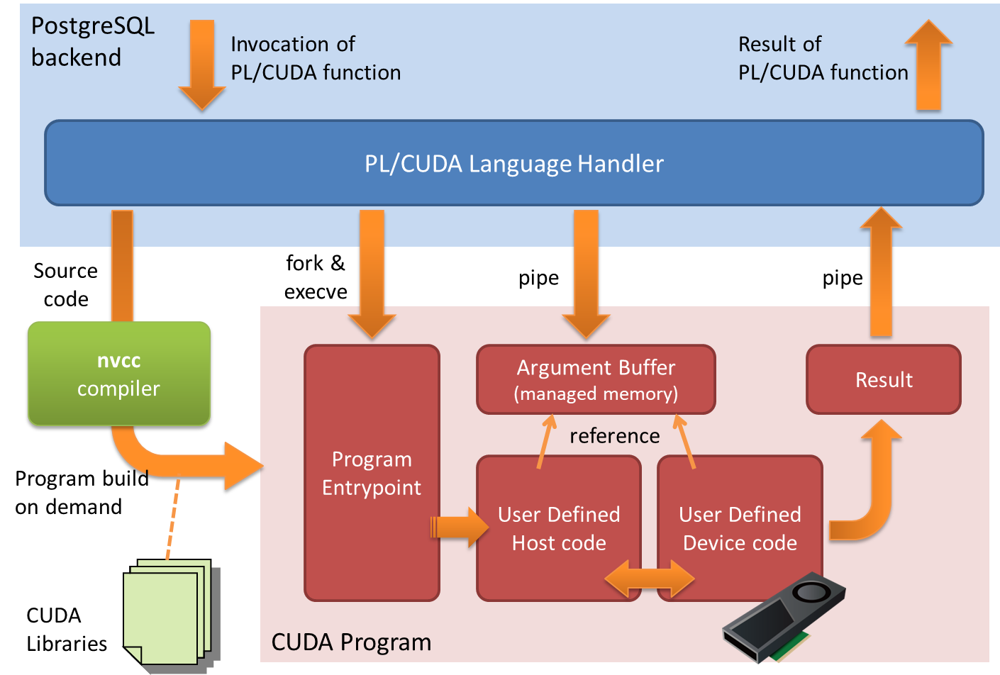

PL/CUDA
本章では、PL/CUDA言語を用いて、GPUで実行可能なネイティブプログラムをSQL関数として実装する方法について説明します。
PL/CUDA概要
内部的に、PG-StromはSQL構文を元にCUDA言語によるGPUプログラムを生成し、これを実行時コンパイルによってGPU用命令バイナリを生成します。 CUDAとはNVIDIA社の提供するプログラミング環境で、C言語に似た構文を用いてGPUで並列実行可能なプログラムを記述する事ができます。 SQL構文からCUDAプログラムへの変換プロセスは内部的なもので、ユーザの視点からは、どのようなGPU用プラグラムが生成、実行されるのかを意識する必要はありません。
一方、PostgreSQLではCREATE LANGUAGE構文を用いてSQL関数の記述に用いるプログラミング言語を追加する事ができます。 PL/CUDAとはCREATE LANGUAGE構文に対応した言語ハンドラで、SQLを元にPG-Stromが自動生成するGPUプログラムだけでなく、ユーザが実装した任意のGPUプログラムをSQL関数として実行する事が可能となります。
SQL関数の引数には、数値型や文字列型、行列型など、PG-Stromのサポートするデータ型を使用する事ができますが、これらはPL/CUDA実行系が自動的にGPU側へデータを転送するため、データベースとGPU間のデータロードについて意識する必要はありません。また同様に、PL/CUDA関数の戻り値（可変長データ型である場合を含む）もGPU側からCPU側へと書き戻され、SQL関数の戻り値として整形されます。
また、PL/CUDA関数の引数としてgstore_fdwを用いて定義した外部表を使用する事ができます。この場合、データは既にGPUにロード済みであるためPL/CUDA関数呼び出しのたびにデータロードを行う必要はなく、またPostgreSQL可変長データの長さ制限である1GBよりも大きなデータを使用する事ができます。
これらの特徴により、ユーザはGPUやデータベースとの間のデータの入出力といった定型的な処理に煩わされる事なく、統計解析ロジックの実装や高速化といった生産的な作業に注力する事ができます。
ここに絵
CREATE FUNCTION構文を用いてPL/CUDA関数を定義すると、この関数の実行時、関数の定義部をそのままGPUのカーネル関数に埋め込んだCUDAプログラムを作成します。 このカーネル関数は、ユーザ定義処理の他に、PL/CUDA関数の引数を参照するための変数の初期化や、実行時エラーをCPU側へ返却するための補助的なコードを含んでいます。また、PG-Stromの実行をサポートするための各種ランタイム関数をインクルードする事もできます。
PL/CUDA関数を用いて作成したネイティブのCUDAプログラムには、特別なメモリ保護などの仕組みはなく、バグのあるPL/CUDA関数の実行により、GPU実行環境や場合によってはPostgreSQL側をクラッシュさせる事も可能です。したがって、PL/CUDA関数の定義はデータベース特権ユーザに限定されています。
以下に単純なPL/CUDA関数の例を示します。 この関数は、int型の引数を二つ取り、その和をint型で返却します。
postgres=# CREATE FUNCTION gpu_add(int, int)
RETURNS int
AS $$
#plcuda_include "cuda_mathlib.h"
#plcuda_begin
if (get_global_id() == 0)
*retval = pgfn_int4pl(kcxt, arg1, arg2);
#plcuda_end
$$ LANGUAGE plcuda;
CREATE FUNCTION
#plcuda_beginと#plcuda_endで囲まれた部分が、PL/CUDA関数の本体部分です。 int型の引数はそれぞれ、pg_int4_t型の変数arg1、arg2として参照する事ができ、pg_int4_t *型のポインタretvalの示す領域にセットしたデータが、PL/CUDA関数の実行結果としてCPU側に返却されます。pgfn_int4pl()はcuda_mathlib.hで定義されたPG-Stromのランタイム関数の一つで、pg_int4_t同士の加算を実行します。
このPL/CUDA関数を実行すると、以下のように引数である100, 200という整数値をGPU側に送出し、計算結果である300という値をGPUから書き戻しています。通常のSQL関数と同様に、PL/CUDA関数を他のSQL式の一部として使用する事もできます。
postgres=# SELECT gpu_add(100,200);
gpu_add
---------
300
(1 row)
PL/CUDA関数を定義した結果、どのようなカーネル関数が生成されるのかを確認するにはplcuda_function_source関数を使用します。 コメント文/* ---- code by pl/cuda function ---- */で囲まれたブロックがPL/CUDA関数の定義部から挿入された部分です。
postgres=# SELECT pgstrom.plcuda_function_source('gpu_add'::regproc);
plcuda_function_source
----------------------------------------------------------------
#include <cuda_device_runtime_api.h> +
+
#define HOSTPTRLEN 8 +
#define DEVICEPTRLEN 8 +
#define BLCKSZ 8192 +
#define MAXIMUM_ALIGNOF 8 +
#define MAXIMUM_ALIGNOF_SHIFT 3 +
#define PGSTROM_KERNEL_DEBUG 1 +
#include "cuda_common.h" +
+
#define PG_BOOLOID 16 +
#define PG_INT2OID 21 +
#define PG_INT4OID 23 +
#define PG_INT8OID 20 +
#define PG_FLOAT2OID 237809 +
#define PG_FLOAT4OID 700 +
#define PG_FLOAT8OID 701 +
#define PG_CASHOID 790 +
#define PG_UUIDOID 2950 +
#define PG_MACADDROID 829 +
#define PG_INETOID 869 +
#define PG_CIDROID 650 +
#define PG_DATEOID 1082 +
#define PG_TIMEOID 1083 +
#define PG_TIMETZOID 1266 +
#define PG_TIMESTAMPOID 1114 +
#define PG_TIMESTAMPTZOID 1184 +
#define PG_INTERVALOID 1186 +
#define PG_BPCHAROID 1042 +
#define PG_VARCHAROID 1043 +
#define PG_NUMERICOID 1700 +
#define PG_BYTEAOID 17 +
#define PG_TEXTOID 25 +
#define PG_INT4RANGEOID 3904 +
#define PG_INT8RANGEOID 3926 +
#define PG_TSRANGEOID 3908 +
#define PG_TSTZRANGEOID 3910 +
#define PG_DATERANGEOID 3912 +
+
#include "cuda_mathlib.h" +
typedef union { +
pg_varlena_t varlena_v; +
pg_bool_t bool_v; +
pg_int2_t int2_v; +
pg_int4_t int4_v; +
pg_int8_t int8_v; +
pg_float2_t float2_v; +
pg_float4_t float4_v; +
pg_float8_t float8_v; +
#ifdef CUDA_NUMERIC_H +
pg_numeric_t numeric_v; +
#endif +
#ifdef CUDA_MISC_H +
pg_money_t money_v; +
pg_uuid_t uuid_v; +
pg_macaddr_t macaddr_v; +
pg_inet_t inet_v; +
pg_cidr_t cidr_t; +
#endif +
#ifdef CUDA_TIMELIB_H +
pg_date_t date_v; +
pg_time_t time_v; +
pg_timestamp_t timestamp_v; +
pg_timestamptz_t timestamptz_v; +
#endif +
#ifdef CUDA_TEXTLIB_H +
pg_bpchar_t bpchar_v; +
pg_text_t text_v; +
pg_varchar_t varchar_v; +
#endif +
#ifdef CUDA_RANGETYPE_H +
pg_int4range_t int4range_v; +
pg_int8range_t int8range_v; +
#ifdef CUDA_TIMELIB_H +
pg_tsrange_t tsrange_v; +
pg_tstzrange_t tstzrange_v; +
pg_daterange_t daterange_v; +
#endif +
#endif +
} pg_anytype_t; +
+
+
#include "cuda_plcuda.h" +
STATIC_INLINE(void) +
__plcuda_main_kernel(kern_plcuda *kplcuda, +
void *workbuf, +
void *results, +
kern_context *kcxt) +
{ +
pg_int4_t *retval __attribute__ ((unused)); +
pg_int4_t arg1 __attribute__((unused)); +
pg_int4_t arg2 __attribute__((unused)); +
assert(sizeof(*retval) <= sizeof(kplcuda->__retval)); +
retval = (pg_int4_t *)kplcuda->__retval; +
arg1 = pg_int4_param(kcxt,0); +
arg2 = pg_int4_param(kcxt,1); +
+
/* ---- code by pl/cuda function ---- */ +
if (get_global_id() == 0) +
*retval = pgfn_int4pl(kcxt, arg1, arg2); +
/* ---- code by pl/cuda function ---- */ +
} +
+
KERNEL_FUNCTION(void) +
plcuda_main_kernel_entrypoint(kern_plcuda *kplcuda, +
void *workbuf, +
void *results) +
{ +
kern_parambuf *kparams = KERN_PLCUDA_PARAMBUF(kplcuda); +
kern_context kcxt; +
+
assert(kplcuda->nargs <= kparams->nparams); +
INIT_KERNEL_CONTEXT(&kcxt,plcuda_main_kernel,kparams); +
__plcuda_main_kernel(kplcuda, workbuf, results, &kcxt); +
kern_writeback_error_status(&kplcuda->kerror_main, &kcxt.e);+
} +
+
+
#include "cuda_terminal.h" +
(1 row)
PL/CUDAの構造
PL/CUDAの関数定義は、#plcuda_...で始まるディレクティブによって分割されたいくつかのコードブロックから構成されます。 このうち、#plcuda_beginより始まるコードブロックのみが必須で、必要に応じてその他のコードブロックを追加する事ができます。
#plcuda_decl
[...any declarations...]
#plcuda_prep
[...function body of prep kernel...]
#plcuda_begin
[...function body of main kernel...]
#plcuda_post
[...function body of post kernel...]
#plcuda_end
#plcuda_declより始まる宣言ブロックは、その他のコードブロックから呼び出す事ができるstatic関数の宣言を記述する事ができます。 他のコードブロックのように、コードブロックの内容が暗黙のうちに特定のカーネル関数に組み込まれる訳ではなく、完全な形式のstatic関数を定義する必要があります。 GPU上であるカーネル関数がブロックサイズを越える数のスレッドで並列実行されている時、複数の実行ユニット間で同期を取るには、カーネル関数終了のタイミングで待ち合わせる事が唯一の方法です。 例えば、結果バッファが特定の値で初期化されている事を前提としてアルゴリズムが実装されている場合、先ず、結果バッファの初期化を行い、それが全て完了するまではアルゴリズムの中核部分を実行する事はできません。 一部のスレッドが未初期化のバッファに対して実行されるという状況は、容易に不正確な計算結果や実行環境のクラッシュを招いてしまうため、常に避ける必要があります。
#plcuda_prepから始まる前処理ブロック、#plcuda_mainから始まる本体ブロック、および#plcuda_postから始まる後処理ブロックは、それぞれユーザ定義のコードブロックの内容が対応するカーネル関数に埋め込まれます。 前処理ブロックと後処理ブロックの定義はオプショナルですが、これらのコードブロックが定義されている時、前処理カーネル関数、本体カーネル関数、後処理カーネル関数の順で実行される事が保証されています。 これらは、本体カーネル関数の実行に先立って結果バッファや作業バッファの初期化を行う事や、本体カーネル関数の実行後に最終結果を集計するなどの用途に使用する事を意図しています。
一個のPL/CUDA関数の呼び出しは、内部的には何個かのSQL関数、GPUカーネル関数の呼び出しを含んでいます。 GPUカーネル関数の呼び出しに先立って、GPUカーネル関数を起動する際のスレッド数、作業バッファや結果バッファのサイズといったパラメータを決定する必要があります。 これらは引数により変動するため、PL/CUDA言語ハンドラは、同じ引数を取る他のSQL関数を呼びだしてこれらのパラメータを決定します。
GPUカーネル関数の呼び出しパラメータが確定すると、次に、PL/CUDA言語ハンドラは必要に応じて、DMAを用いてPL/CUDA関数の引数をGPU上の引数バッファに転送します。
続いて、（定義されていれば）前処理カーネル関数、本体カーネル関数、（定義されていれば）後処理カーネル関数を呼びだします。ブロックサイズを越えたGPUスレッド間で同期を取る方法は、GPUカーネル関数の開始終了のタイミング以外に無い事に留意してください。つまり、作業バッファや結果バッファがある特定の状態を持っている事を期待するのであれば、前処理カーネル関数で初期化を行い、次に本体カーネル関数でこれらのデータ構造を参照する必要があります。
最後に、PL/CUDA言語ハンドラは結果バッファの内容を本体側へ書き戻します。 PL/CUDA関数が固定長のデータを返す場合、GPUカーネル関数がユーザ定義ブロックの開始前に設定する変数retvalポインタの示す領域を更新します。 PL/CUDA関数が可変長のデータを返す場合、retvalはpg_varlena_t型の領域を指しており、その値が非NULLである場合には結果バッファ（void *results）への参照でなければいけません。結果バッファ以外の領域を指していたとしても、これは本体側へ書き戻されない事に留意してください。
typedef struct {
varlena *value; /* reference to the results buffer */
cl_bool isnull; /* true, if NULL */
} pg_varlena_t;

GPUカーネル関数を実行するスレッド数を指定するには#plcuda_num_threadsディレクティブを使用します。このディレクティブはコードブロックの内側で使用され、定数値またはSQL関数名を指定します。SQL関数は、PL/CUDA関数と同一の引数を持ちbigint型を返す関数として宣言されている必要があります。
同様に、#plcuda_shmem_unitszディレクティブを使用する事で、GPUカーネル関数の実行時に動的に確保する共有メモリのサイズをスレッドあたりの大きさで指定する事ができます。例えば、スレッドあたり8バイトの共有メモリを使用するGPUカーネル関数が実行ユニットあたり384スレッドで起動された場合、3KBの共有メモリを使用する事ができます。 ここで言う実行ユニットあたりスレッド数は、最適化の結果自動的に算出される値で、#plcuda_num_threadsで指定する値とは異なる事に留意してください。
また、#plcuda_kernel_maxthreadsディレクティブを使用する事で、コードブロックから作成されるカーネル関数の最適化方針を、実行効率最大化から、実行ユニットあたりスレッド数最大化（通常、1024スレッド）へと切り替える事が可能です。実行ユニットあたりのスレッド数が増加する事で、縮約演算など、共有メモリを用いた実行ユニット間の同期処理を中核とする処理での性能向上が期待できるます。ただ一方で、スレッドあたりのレジスタ数は少なくなるため、処理の特性による使い分けが必要です。
#plcuda_num_threads (<value>|<function name>)
#plcuda_shmem_unitsz (<value>|<function name>)
#plcuda_kernel_maxthreads
PL/CUDAリファレンス
PL/CUDAディレクティブ
本節はPL/CUDA関数のディレクティブ、および関連するSQL関数のリファレンスです。
#plcuda_begin
本体カーネル関数のコードブロックの開始を宣言します。このディレクティブは必須です。 GPU上でのコードブロックの実行開始に先立って、PL/CUDA関数の引数はarg1、arg2、...という変数名で参照可能となるよう初期化されます。 これらの変数は、PG-StromがSQLデータ型をGPU上で表現するのと同じ表現を持っており、例えば、単精度浮動小数点であるreal型の引数は、以下のように定義されたpg_float4_t型の変数として表現されています。
typedef struct {
cl_float value;
cl_bool isnull;
} pg_float4_t;
これらの変数は各スレッドのプライベート領域に確保されており、変数を更新したとしても次ステップのカーネル関数には反映されません。カーネル関数の終了後、次のカーネル関数に状態を引き継ぐには、void *workbufポインタが参照する作業バッファか、void *resultsポインタの参照する結果バッファに値を格納する必要があります。
#plcuda_end
コードブロックの終了を宣言します。 なお、あるコードブロックの内側で他のコードブロックの開始を宣言した場合、現在のコードブロックは暗黙のうちに#plcuda_endディレクティブによって終了したものとして扱われます。
#plcuda_decl
このディレクティブの使用は任意です。 全てのkernel関数の定義に先立って宣言しておくべきコードブロックの開始を宣言します。 他のコードブロックとは異なり、内容が自動的にkernel関数として展開される事はありませんので、完全な関数定義を記述する必要があります。
#plcuda_prep
このディレクティブの使用は任意です。#plcuda_beginから始まる本体カーネル関数の実行に先立ってGPUで実行すべき、前処理カーネル関数の処理を記述します。 ここでは、結果バッファや作業バッファの初期化を行う事を意図しており、前処理カーネル関数の実行が完了するまでは本体カーネル関数は実行されません。 PL/CUDA関数の引数へは、本体カーネル関数と同様にアクセスする事ができます。
#plcuda_post
このディレクティブの使用は任意です。#plcuda_beginから始まる本体カーネル関数の実行後にGPUで実行すべき、後処理カーネル関数の処理を記述します。 ここでは、CPU側に返却する最終結果を結果バッファにセットする事を意図しており、本体カーネル関数の実行が完了するまでは後処理カーネル関数は実行されません。 PL/CUDA関数の引数へは、本体カーネル関数と同様にアクセスする事ができます。
#plcuda_num_threads (<value>|<function>)
このディレクティブの使用は任意です。未指定の場合、デフォルト値として定数1が使われます。
このディレクティブが#plcuda_prep、#plcuda_begin、および#plcuda_postコードブロックの内側で指定されると、それぞれのGPUカーネル関数を起動する際のスレッド数を指定する事ができます。
数値が指定されると、PL/CUDAランタイムは指定された数のGPUスレッドを起動してGPUカーネル関数を実行します。 関数名が指定されると、PL/CUDAランタイムは指定されたSQL関数を呼び出し、戻り値で指定された数のGPUスレッドを起動します。このSQL関数は、PL/CUDA関数と同一の引数を取り、bigint型を返す必要があります。
#plcuda_shmem_unitsz (<value>|<function>)
このディレクティブの使用は任意です。未指定の場合のデフォルト値は定数0です
このディレクティブが#plcuda_prep、#plcuda_begin、および#plcuda_postコードブロックの内側で指定されると、それぞれのGPUカーネル関数を起動する際に動的に確保するスレッドあたり共有メモリのサイズを指定する事ができます。
数値が指定されると、PL/CUDAランタイムは指定された大きさのスレッドあたり共有メモリを確保してGPUカーネル関数を実行します。
関数名が指定されると、PL/CUDAランタイムは指定されたSQL関数を呼び出し、戻り値で指定された大きさのスレッドあたり共有メモリを確保してGPUカーネル関数を実行します。このSQL関数は、PL/CUDA関数と同一の引数を取り、bigint型を返す必要があります。
GPUカーネル関数の実行時に実際に確保される共有メモリのサイズは、本ディレクティブによって指定したスレッドあたり共有メモリのサイズだけでなく、実行ユニットあたりのスレッド数に依存する事に留意してください。（また、実行ユニットあたりのスレッド数は#plcuda_num_threadsで指定した値とも異なる概念である事に留意してください。） 例えば、スレッドあたり共有メモリのサイズが8バイトであり、実行ユニットあたりのスレッド数が384である場合、実行ユニット毎に3KBの共有メモリが確保されます。この時、#plcuda_num_threadsで指定したスレッド数が32768であれば、このGPUカーネルは86個の実行ユニットを使用して実行されますが、実行ユニットにタスクが投入されるタイミングを決めるのはスケジューラの役割ですので、必ずしも3KB x 86個 = 258KBの共有メモリが一度に消費されるわけではありません。
#plcuda_shmem_blocksz (<value>|<function>)
このディレクティブの使用は任意です。未指定の場合のデフォルト値は定数0です
このディレクティブが#plcuda_prep、#plcuda_begin、および#plcuda_postコードブロックの内側で指定されると、それぞれのGPUカーネル関数を起動する際に動的に確保するブロックあたり共有メモリのサイズを指定する事ができます。
数値が指定されると、PL/CUDAランタイムは指定された大きさのブロック毎共有メモリを確保してGPUカーネル関数を実行します。
関数名が指定されると、PL/CUDAランタイムは指定されたSQL関数を呼び出し、戻り値で指定された大きさのブロックあたり共有メモリを確保してGPUカーネル関数を実行します。このSQL関数は、PL/CUDA関数と同一の引数を取り、bigint型を返す必要があります。
#plcuda_kernel_blocksz (<value>|<function>)
このディレクティブの使用は任意です。
#plcuda_prep、#plcuda_begin、および#plcuda_postコードブロックの内側でこのディレクティブを指定すると、実行ユニットあたりのスレッド数を指定する事ができます。通常、この値はデバイスのWARP値の倍数であり1024以下です。 デフォルトでは、GPUカーネル関数のリソース消費量に基づいた最適な値が使用されます。したがって、アルゴリズムの性質上大きなブロックサイズが望ましいなどの理由がない限り、本ディレクティブを使用すべきではありません。
数値が指定されると、PL/CUDAランタイムは指定された大きさのブロックを設定してGPUカーネル関数を実行します。 関数名が指定されると、PL/CUDAランタイムは指定されたSQL関数を呼び出し、戻り値で指定された大きさのブロックを設定してGPUカーネル関数を実行します。このSQL関数は、PL/CUDA関数と同一の引数を取り、bigint型を返す必要があります。
ブロックあたりスレッド数が多くなると、より多くのスレッドが共有メモリを介して同期処理を行う事ができるようになる半面、スレッドが使用できるレジスタ数が減少するため、一部のローカル変数がグローバルメモリ上に確保されるなど性能面では不利になる事があります。
#plcuda_include ("library name"|<function name>)
PG-Stromの静的GPUライブラリ、またはユーザ定義のコードブロックをインクルードし、PL/CUDA関数内で使用できるようにします。サーバシステム上の任意のヘッダファイルをインクルーとして利用するための機能ではない事に留意してください。
以下の表にあるPG-Stromの静的GPUライブラリ名を指定すると、PL/CUDAランタイムは生成されるCUDA Cプログラムの先頭に指定されたライブラリをインクルードします。正直なところ、この用法は古いものであり利用シーンは限られるでしょう。
関数名が指定されると、PL/CUDAランタイムは指定されたSQL関数を呼び出し、#plcuda_includeディレクティブの存在した場所に、戻り値のテキストを挿入します。このSQL関数は、PL/CUDA関数と同一の引数を取り、text型を返す必要があります。
| ライブラリ名 | 説明 |
|---|---|
"cuda_dynpara.h" |
GPU内で動的にカーネル関数を起動するDynamic Parallelism関連のGPUランタイム関数群です。 このファイルをインクルードすると、CUDAのデバイスランタイムも同時にリンクされるようになります。 |
"cuda_matrix.h" |
SQLの配列型をベクトル/行列と見なして処理するためのGPUランタイム関数群です。 |
"cuda_timelib.h" |
SQLの日付時刻型を処理するためのGPUランタイム関数群です。 |
"cuda_textlib.h" |
SQLのテキストデータ型、およびLIKEオペレータを処理するためのGPUランタイム関数群です。 |
"cuda_numeric.h" |
SQLのNumericデータ型を処理するためのGPUランタイム関数群です。 |
"cuda_mathlib.h" |
SQLの数学関数や四則演算オペレータを処理するためのGPUランタイム関数群です。 |
"cuda_money.h" |
SQLの通貨型を処理するためのGPUランタイム関数群です。 |
"cuda_curand.h" |
CUDAの乱数生成ライブラリcurandを使用するためのGPUランタイム関数群です。 |
#plcuda_results_bufsz (<value>|<function>)
このディレクティブの使用は任意です。未指定の場合のデフォルト値は定数0です
PL/CUDA関数の実行時に確保する結果バッファの大きさをバイト単位で指定します。PL/CUDA関数が可変長型データを返却する際には、結果バッファの確保は必須です。
数値が指定されると、PL/CUDA言語ハンドラは指定されたバイト数のGPU RAMを結果バッファとして確保してからGPUカーネル関数を起動します。 関数名が指定されると、PL/CUDA言語ハンドラは指定されたSQL関数を呼び出し、戻り値で指定されたバイト数のGPU RAMを結果バッファとして確保し、GPUカーネル関数を起動します。このSQL関数は、PL/CUDA関数と同一の引数を取り、bigint型を返す必要があります。
GPUカーネル関数からは、結果バッファは引数void *resultsで指定された領域としてアクセス可能です。 0バイトが指定された場合、void *resultsにはNULLがセットされます。
#plcuda_working_bufsz (<value>|<function>)
このディレクティブの使用は任意です。未指定の場合のデフォルト値は定数0です
PL/CUDA関数の実行時に確保する作業バッファの大きさをバイト単位で指定します。
数値が指定されると、PL/CUDA言語ハンドラは指定されたバイト数のGPU RAMを作業バッファとして確保してからGPUカーネル関数を起動します。 関数名が指定されると、PL/CUDA言語ハンドラは指定されたSQL関数を呼び出し、戻り値で指定されたバイト数のGPU RAMを作業バッファとして確保し、GPUカーネル関数を起動します。このSQL関数は、PL/CUDA関数と同一の引数を取り、bigint型を返す必要があります。
GPUカーネル関数からは、作業バッファは引数void *workbufで指定された領域としてアクセス可能です。 0バイトが指定された場合、void *workbufにはNULLがセットされます。
#plcuda_sanity_checl <function>
GPUカーネルの起動に先立って、引数の妥当性を検証するためのSQL関数をしています。
デフォルトでは妥当性検証関数は設定されていません。
GPUデバイスの初期化などを行う必要があるため、通常、GPUカーネル関数の起動はCPU上で別の関数を起動するよりも重い処理です。もし引数がPL/CUDA関数の仕様からは許容できない値を持っている場合、GPUカーネル関数を実行する数千～数百万（場合によってはそれ以上の）のGPUスレッドは、ただ引数の妥当性をチェックしてエラー状態を返却するためだけに起動されます。GPUカーネル関数を実行する前に、引数の妥当性チェックを十分小さなコストで行えるならば、妥当性検証関数を使用してGPUカーネル関数の実行前にエラーを発生させることを考慮すべきです。 妥当性検証関数は、PL/CUDA関数と同じ型の引数を持ち、bool返す関数です。
#plcuda_cpu_fallback <function>
GPUカーネル関数と同等の処理を行うCPUフォールバック関数を指定します。 デフォルトではCPUフォールバック関数は設定されていません。
GPUカーネル関数がStromError_CpuReCheckエラーを返却し、さらにCPUフォールバック関数が設定されていると、PL/CUDA言語ハンドラはGPUでの処理結果を破棄してCPUフォールバック関数を呼びだします。 これは、必ずしも全ての入力に対してGPUカーネル関数を実行可能でない（例えばデータサイズがGPU RAMに載りきらないなど）場合に、代替の救済策を実装するために有用です。ただし、CPUフォールバック関数はシングルスレッドで実行されるため、パフォーマンスが犠牲にならざるを得ない点には留意してください。
PL/CUDA 関連関数
| 関数定義 | 結果型 | 説明 |
|---|---|---|
plcuda_function_source(regproc) |
text |
引数としてPL/CUDA関数のOIDを与えると、PL/CUDA関数から生成されるGPUカーネルのソースコードを返します。 |
配列ベースの行列型関数
本節ではPG-Stromの提供する配列ベースの行列型をサポートするSQL関数について説明します。
PostgreSQLには行列を表現するための専用のデータ型は存在していませんが、以下の条件を満たす二次元配列をあたかも行列であるかのように取り扱う事が可能です。
- 二次元配列である
- 各次元の配列要素が1から始まる
- NULL値を含まない
- 配列の大きさが1GBを越えない。（PostgreSQL可変長データ表現による制約）
smallint、int、bigint、realまたはfloat型の配列である
配列がこれらの条件を満たす時、行列の(i,j)要素の位置は添え字から一意に特定する事ができ、GPUスレッドが自らの処理すべきデータを効率的に取り出す事を可能とします。また、通常の行形式データとは異なり、計算に必要なデータのみをロードする事になるため、メモリ消費やデータ転送の点で有利です。 PG-Stromは、この様な疑似的な行列型をサポートするため、以下に示すSQL関数を提供しています。
| 関数定義 | 結果型 | 説明 |
|---|---|---|
array_matrix(variadic arg, ...) |
array |
入力された行を全て連結した配列ベース行列を返す集約関数です。例えば、float型の引数x、y、zを1000行入力すると、同じfloat型で3列×1000行の配列ベース行列を返します。この関数は可変長引数を取るよう定義されており、 argは1個以上のsmallint、int、bigint、realまたはfloat型のスカラー値で、全てのarg値は同じデータ型を持つ必要があります。 |
matrix_unnest(array) |
record |
配列ベース行列を行の集合に展開する集合関数です。arrayはsmallint、int、bigint、realまたはfloat型の配列で、行列の幅に応じて1個以上のカラムからなるrecord型を返却します。例えば、10列×500行から成る行列の場合、各レコードは行列要素のデータ型を持つ10個のカラムからなり、これが500行生成されます。 標準の unnest関数と似ていますが、record型を生成するため、AS (colname1 type[, ...])句を用いて返却されるべきレコードの型を指定する必要があります。 |
rbind(array, array) |
array |
arrayはsmallint、int、bigint、realまたはfloat型の配列です。二つの配列ベース行列を縦方向に結合します。双方の行列は同一の要素データ型を持つ必要があり、行列の幅が等しくない場合は足りない部分を0で埋めます。 |
rbind(array) |
array |
arrayはsmallint、int、bigint、realまたはfloat型の配列です。rbind(array, array)と似ていますが、集合関数として動作し入力された全ての配列ベース行列を縦方向に結合します。 |
cbind(array, array) |
array |
arrayはsmallint、int、bigint、realまたはfloat型の配列で、二つの配列ベース行列を横方向に結合します。双方の行列は同一の要素データ型を持つ必要があり、行列の高さ等しくない場合は足りない部分を0で埋めます。 |
cbind(array) |
array |
arrayはsmallint、int、bigint、realまたはfloat型の配列で、cbind(array, array)と似ていますが、集合関数として動作し入力された全ての配列ベース行列を横方向に結合します。 |
transpose(array) |
array |
arrayはsmallint、int、bigint、realまたはfloat型の配列で、行列の幅と高さが入れ替わった転置行列を生成します。 |
array_matrix_validation(anyarray) |
bool |
入力された配列（anyarray）が、配列ベース行列として妥当かどうかを検査します。 PL/CUDA関数実行前の引数の妥当性検証や、DOMAIN型を定義する時の検査制約としての利用を想定しています。 |
array_matrix_height(array) |
int |
arrayはsmallint、int、bigint、realまたはfloat型の配列で、配列ベース行列の高さを返却します。 |
array_matrix_width(array) |
int |
arrayはsmallint、int、bigint、realまたはfloat型の配列で、配列ベース行列の幅を返却します。 |
array_vector_rawsize(regtype,int) |
bigint |
第一引数で指定したデータ型、第二引数で指定した高さを持つ配列ベースベクトル（1次元配列）の作成に必要なメモリ領域の大きさを返します。#plcuda_results_bufszや#plcuda_working_bufszでの利用を意図しています。 |
array_matrix_rawsize(regproc,int,int) |
bigint |
第一引数で指定したデータ型、第二引数で指定した高さ、および第三引数で指定した幅の配列ベース行列の作成に必要なメモリ領域の大きさを返します。#plcuda_results_bufszや#plcuda_working_bufszでの利用を意図しています。 |
array_cube_rawsize(regtype,int,int,int) |
bigint |
第一引数で指定したデータ型、第二引数で指定した高さ、第三引数で指定した幅、および第４引数で指定した深さの配列ベースキューブ（3次元配列）の作成に必要なメモリ領域の大きさを返します。#plcuda_results_bufszや#plcuda_working_bufszでの利用を意図しています。 |